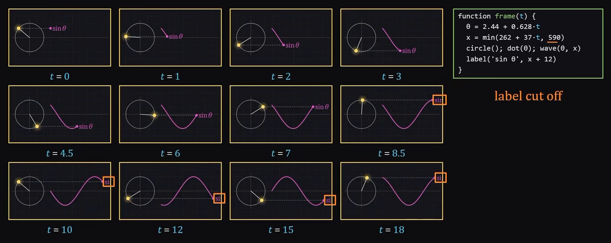
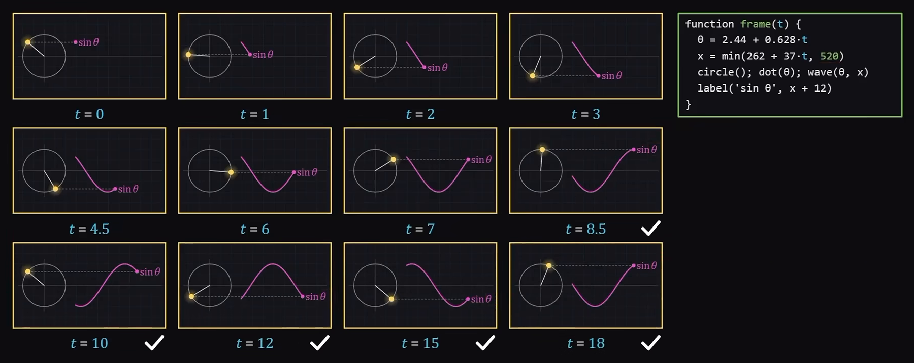

Your agent is coding
blind
Without tools it guesses at APIs and never sees the page it built.
the same task, twice
without

with

An hour of copy-paste fixes
One prompt, checked live
Source: my own test run
{{BRAND}} · 02 / 09 →